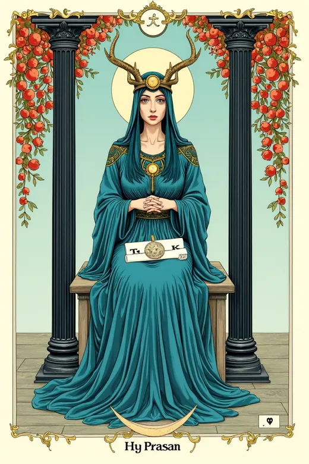
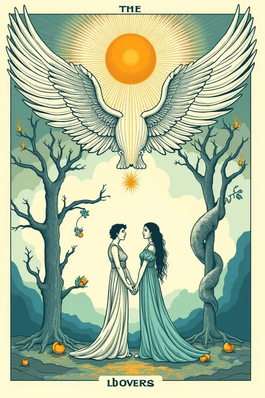
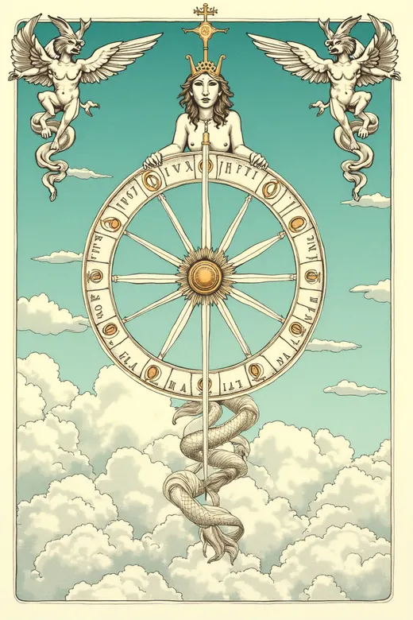
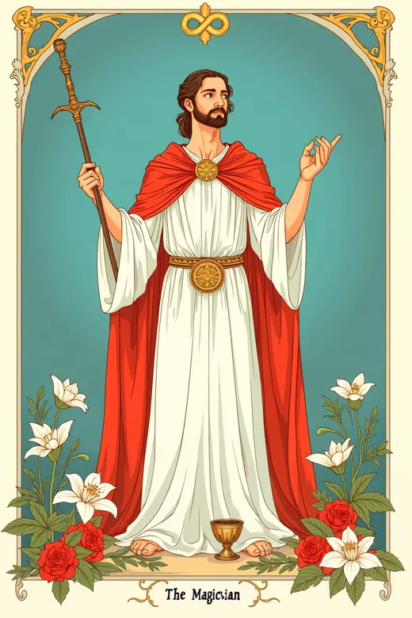
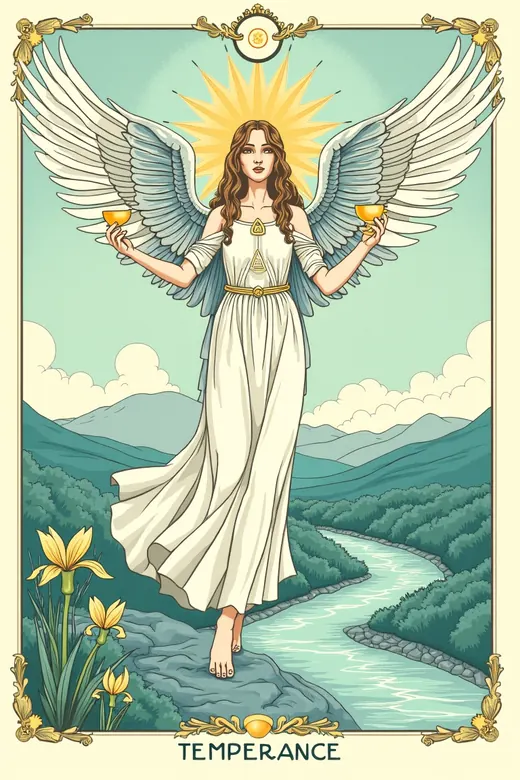
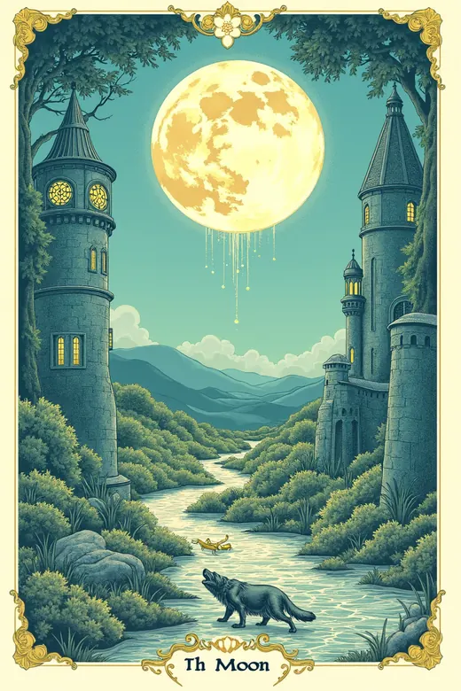
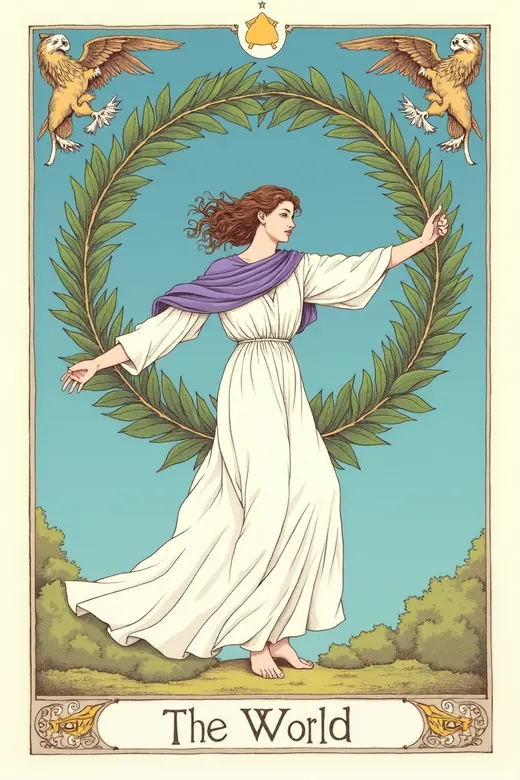

Arcana Sense · destiny matrix across 22 arcana
Destiny Matrix: a reading from your date of birth
Twenty-two arcana, seventeen positions of the octagram, and a written
interpretation for every one of them.
Hello. The English version of Arcana Sense is in development.
The calculator and the full encyclopedia already work in Russian at
arcana-sense.ru — the chart is the same one,
only the words are not yours yet.
What is a destiny matrix
A destiny matrix turns a date of birth into a diagram: the day, the month and the year are
reduced to numbers from 1 to 22, and each number is read as one of the major arcana. The
numbers are placed on an octagram, where every position answers a different question —
character, comfort zone, profession, money, relationships, the tasks inherited from a family
line.
Nothing here is drawn from a deck. The arcana only lend their names to the twenty-two
values; the values themselves come out of arithmetic, and the same date always gives the
same chart.
What the English version will hold
- the chart itself, calculated in the browser — the date of birth is never sent anywhere;
- all 22 arcana, each with its own article;
- 17 positions of the octagram and what an arcanum means in each of them;
- the seven energy levels of the chart and how they are read together;
- a personal reading of twenty sections built from the chart.
The reading is written for reflection and entertainment. It is not medical, psychological
or financial advice, and it promises no events.